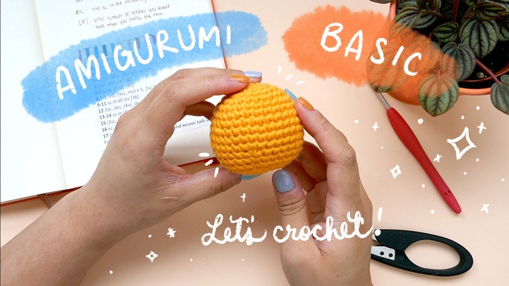

Amigurumi for Beginners
Amigurumi
Amigurumi is the Japanese art of crocheting or knitting small, stuffed animals or creatures, and it’s a delightful and rewarding hobby for beginners. The word "amigurumi" comes from the combination of "ami," meaning "crocheted" or "knitted," and "nuigurumi," meaning "stuffed doll."
For beginners, amigurumi is an excellent way to practice crochet skills because it combines basic stitches like chain, slip stitch, single crochet, and increasing/decreasing with the creation of fun, colorful shapes. The process involves working in the round, creating small, tightly stitched parts, and assembling them into a finished character or figure.
Amigurumi is especially appealing because it allows for creativity and personalization. You can customize your creations with various yarn colors, facial features, and accessories, making each one unique. Though the process can seem intricate, beginners can start with simple patterns.
Featured Sulky Products:
- Yarn
- Crochet Hook
- Stitch Markers
- Scissors
- Stuffing
- Safety Eyes or Embroidery Thread
- Yarn Needle
- Polyester Filling (optional)
Step-by-Step For Making Basic Amigurumi
1.Start with a Magic Ring: Make a magic ring to start working in the round. If you prefer, you can start with a chain and join it into a loop.
2.Crochet the Body (Working in the Round): Work single crochet (sc) stitches into the magic ring (6 stitches are typical for the first round). Pull the ring tight to close.
For subsequent rounds, increase stitches (sc 2 into each stitch) to widen the piece until you reach the desired size for the body.
3.Increase and Decrease Stitches: As you move along, you will increase (sc 2 in one stitch) to expand the piece and decrease (sc 2 together) to shape the body or head.
4.Add Limbs and Features: Once the body is formed, you can make separate limbs (arms, legs) and sew them to the body.
Use either safety eyes or embroidery for the facial features (eyes, nose, mouth). If using safety eyes, attach them before closing the head.
5.Stuff the Amigurumi: As you go along, stuff the amigurumi lightly with the polyester filling, ensuring it’s firm but not overly packed. Make sure to stuff as you finish each section (head, body, etc.) so it holds its shape.
6.Assemble the Pieces: If your amigurumi consists of multiple parts (head, body, arms, legs), sew them together using a yarn needle. Use the same yarn to stitch the pieces securely and hide any visible seams.
7.Final Touches: Use embroidery thread or small yarn pieces to add details like cheeks, eyebrows, or a mouth.
Weave in any loose ends with a yarn needle and trim any excess yarn.
8.Complete Your Amigurumi: Once everything is stitched and secure, your amigurumi is ready! Enjoy your cute, handmade creation.

Share tips, start a discussion, or ask one of our experts or other students a question.